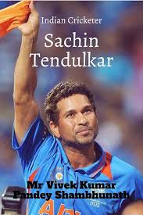

Sachin Tendulkar
Introduction about the Legend
Sachin Tendulkar was born to a middle-class family and came to limelight with a performance in the school tournament. He held a record partnership at that time with Vinod Kambli playing for their school tournament. That innings changed Sachin's life completely and he became famous in a fortnight. Sachin Tendulkar, his transition story has inspired many people to work on their dreams. For a few people, he is a god and for others, he is the epitome of success on which the future of Indian cricket is the judge. Throughout his career of 30 years, he has accomplished wonders for the Indian cricket team and that is why many people worship him as the God of cricket. In this essay on Sachin Tendulkar, we will try to understand the life and the mindset of the greatest cricket player to have ever played the game.
Personal Details
HONOURS DETAILS
| YEAR | AWARD NAME | DETAILS |
|---|---|---|
| 1994 | Arjuna Award | Recipient for achievements in cricke |
| 1997 | Wisden Cricketer of the Year | Tendulkar was one of the five cricketers selected as Wisden Cricketer of the Year. |
| 1999 | Padma Shri | India's fourth highest civilian award |
| 2001 | Maharashtra Bhushan | Maharashtra's highest civilian award |
| 2008 | Padma Vibhushan | India's second-highest civilian award |
| 2010 | ICC Cricketer of the year | Highest award in the ICC listings |
| 2014 | Bharat Ratna | India's highest civilian award |
| 2019 | ICC Cricket Hall of Fame | Inducted into the ICC Cricket Hall of Fame |
| 2020 | Laureus World Sports Awards | Laureus World Sports Awards Sporting Moment of the Year (2000 to 2020) |